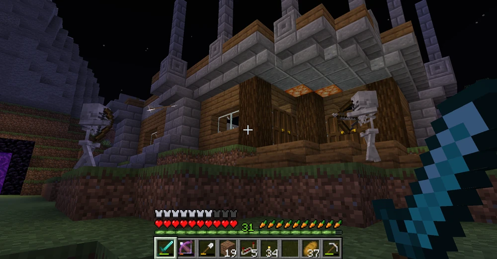

Minecraft Game Modes
In this mode, players can take damage from the environment and hostile mobs, and will die if they receive enough damage. When a player dies, they will return to the world spawn, a previously slept-in bed, or a respawn anchor in the Nether..
Survival mode offers the core Minecraft experience, especially in thriving the world of Minecraft. Always prepare yourself from harms and from the monsters. Surviving is you main objective in this mode.
Gathering resources is an imprtant process of the game. With resources, you can craft tools, weapons, equipments, and other important things.
Creative mode allows you to build freely with unlimited resources and the ability to fly. No health or hunger bars, and you can explore the world without limits.
Creative mode allows the player to choose or equip any items in the game. Opening your Inventory will show you all the items that you can use and equip, you can also get items that you can't get from the inventory through commands.
This mode offers infinite possibilities of creation. It can be from Redstone Engineering to building various infastructures. The choice is yours.
Adventure mode focuses on exploring custom maps and adventures, with certain restrictions like only being able to break specific blocks with the correct tools.
Spectator mode lets you explore the world without interacting with it. You can fly through blocks and observe the environment or other players from any angle.

You can also see what the other mobs see, and see the world from their perspective (refer to the image below) the image below is an example of the vision of the creeper.